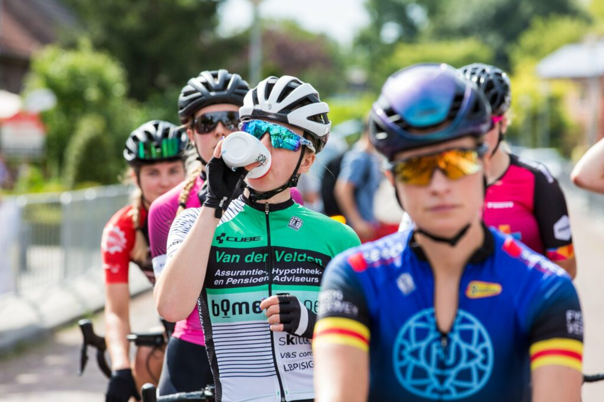

Vraagje?
Heb je interesse in technische ondersteuning op professioneel niveau of wil je meer weten over wat we precies voor jou kunnen betekenen? Aarzel dan niet om contact met ons op te nemen. We staan klaar om je te helpen bij elk aspect van je voorbereiding, begeleiding en ondersteuning op en naast de fiets. Of je nu een ambitieuze renner bent die zich voorbereidt op een belangrijk evenement, een clubteam dat op zoek is naar mechanische ondersteuning tijdens een stage, of gewoon iemand die zorgeloos wil rijden met technische backup, wij luisteren naar je wensen en denken actief met je mee. Elke situatie is anders, en daarom leveren we maatwerk, afgestemd op jouw doelen en omstandigheden. Je kunt ons bereiken voor vragen, samenwerkingen of het plannen van een eerste kennismakingsgesprek. We nemen graag de tijd om alles met je door te nemen en te bekijken hoe we jouw prestaties en rijervaring naar een hoger niveau kunnen tillen. Persoonlijk contact staat bij ons centraal, en we reageren zo snel mogelijk op elk bericht. Stuur ons een e-mail, bel ons of vul het contactformulier op deze pagina in. We kijken ernaar uit om van je te horen en samen aan de slag te gaan.